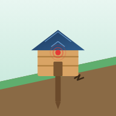

Connecting…
No data yet
NO DATA
Waiting for the stake to report.

Smart Landslide Early-Warning Stake
Watch ≥ 70 % · Warning ≥ 85 %
--
Watch ≥ 6° · Warning ≥ 12° · Danger ≥ 20°
X --° · Y --° · --
Pin pulled out = ground has opened
-- V · Wi-Fi -- dBm
Commands are sent to the stake over MQTT.
A solar-powered, plug-in early-warning stake for roadside and hillside slopes. Entry for the IPITEx 2027 invention exhibition, Bangkok, Thailand.
A slope rarely fails without warning. Before a landslide, the ground, nearby structures and groundwater usually show early signs. Slope Sentinel watches for the three signs that can be measured cheaply and continuously, then alerts people on site and on their phones.
Power: rechargeable battery with a solar panel on the hut roof (display model).
Department of Computer and Communication Engineering,
Shu-Te University, Taiwan.
The topic base must match MQTT_BASE in the ESP32 firmware.
Keep the app open or installed on your home screen. On iPhone, notifications work only after “Add to Home Screen”.
Slope Sentinel v1.0 · IPITEx 2027